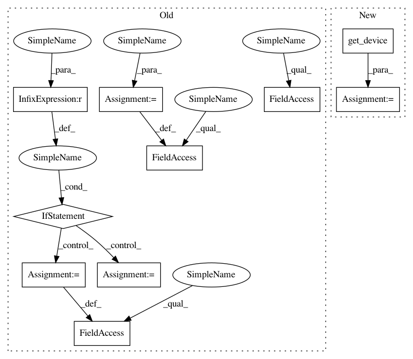

968ed8b75cc183e66777ca9d75ea765eede7a57c,autokeras/nn/model_trainer.py,GANModelTrainer,__init__,#GANModelTrainer#Any#Any#Any#Any#Any#Any#,230
Before Change
super().__init__(loss_function, train_data, verbose=verbose)
self.d_model = d_model
self.g_model = g_model
self.d_model.to(self.device)
self.g_model.to(self.device)
self.out_f = None
self.out_size = 0
if gen_training_result is not None:
self.out_f, self.out_size = gen_training_result
self.sample_noise = torch.randn(self.out_size,
self.g_model.nz,
1, 1, device=self.device)
self.optimizer_d = None
self.optimizer_g = None
def train_model(self,
max_iter_num=None,
max_no_improvement_num=None):
After Change
if device is not None:
self.device = device
else:
self.device = get_device()
self.metric = metric
self.verbose = verbose
self.loss_function = loss_function
self.train_loader = train_data
In pattern: SUPERPATTERN
Frequency: 3
Non-data size: 10
Instances
Project Name: keras-team/autokeras
Commit Name: 968ed8b75cc183e66777ca9d75ea765eede7a57c
Time: 2018-12-02
Author: lin.yang@tamu.edu
File Name: autokeras/nn/model_trainer.py
Class Name: GANModelTrainer
Method Name: __init__
Project Name: bethgelab/foolbox
Commit Name: a04525112543a5dbf77401cde45442932aeec368
Time: 2020-01-26
Author: git@jonasrauber.de
File Name: foolbox/ext/native/models/tensorflow.py
Class Name: TensorFlowModel
Method Name: __init__
Project Name: keras-team/autokeras
Commit Name: 968ed8b75cc183e66777ca9d75ea765eede7a57c
Time: 2018-12-02
Author: lin.yang@tamu.edu
File Name: autokeras/nn/model_trainer.py
Class Name: GANModelTrainer
Method Name: __init__